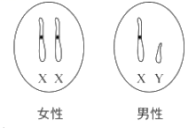

2018年北京市中考生物试题 · 选择题 第6、7、8、9、10题 · 对应解析
6. 球迷观赛时，看到精彩瞬间会激动得欢呼雀跃。对球迷这种反应的分析不正确的是
A. 这种反应过程属于反射
B. 这种反应过程不需要大脑皮层参与
C. 眼和耳是感受刺激的主要器官
D. 骨骼肌是产生动作的效应器
【答案】B
【解析】
【详解】球迷观赛时看到精彩瞬间，会激动得欢呼雀跃。球迷这种反应属于条件反射，这种反应过程需要大脑皮层参与，眼和耳是感受刺激的主要器官，骨骼肌是产生动作的效应器。
7. 排球运动员在比赛中需完成手腕屈和伸等动作，关于这些动作的分析不正确的是
A. 在神经系统调节下完成
B. 由一块骨骼肌收缩完成
C. 由骨骼肌牵引骨绕关节活动完成
D. 体现了关节的牢固和灵活
【答案】B
【解析】
【详解】运动的产生是在神经系统的调节下完成的，当控制某些骨骼肌的神经受到损伤时，身体的这部分就可能会瘫痪，并且可能导致骨骼肌的萎缩，A正确；一个动作的完成总是由两组肌肉相互配合活动，共同完成的，B错误；骨骼肌有受刺激而收缩的特性，当骨骼肌受神经传来的刺激收缩时，就会牵动着它所附着的骨，绕着关节活动，于是躯体就产生了运动，C正确；在运动中，关节周围有关节囊包括着，密闭的关节腔内有滑液，保证了关节既牢固、又灵活，D正确。
8. 深圳的国家基因库中，储存有不同生物的基因样本超过1000万份。下列叙述不正确的是
A. 基因是有遗传效应的DNA片段B. 基因可以在亲子代之间传递
C. 基因库中储存的基因都相同D. 建立基因库利于保护生物多样性
【答案】C
【解析】
【详解】基因是具有遗传效应的DNA片段，是决定生物性状的基本单位，A正确；基因通过精子与卵细胞在亲子代之间传递，B正确；不同物种（兔和小麦）之间基因组成差别很大，同种生物如兔之间（有白的、黑的、灰的等）基因也有差别，所以基因库中储存的基因都不相同，C错误；建立基因库利于保护生物多样性，D正确。
9. 下图是人体细胞中性染色体组成示意图，下列叙述不正确的是

A. 男性产生含X或Y染色体的精子
B. 女性产生含X染色体 卵细胞
卵细胞
C. 新生儿的性别仅由母亲决定
D. 新生儿的性别比例接近1：1
【答案】C
【解析】
【详解】男性产生两种类型的精子--含X染色体的精子和含Y染色体的精子，A正确；女性则只产一种含X染色体的卵细胞，B正确；受精时，如果是含X的精子与卵子结合，就产生具有XX的受精卵并发育成女性；如果是含Y的精子与卵子结合，就产生具有XY的受精卵并发育成为男性。因此，新生儿的性别主要取决于“父亲的精子”，C错误；男性的两种精子与女性的卵细胞结合是随机的，结合机会相同，生男生女的机会均等，各是50%。所以在自然状态下，人类社会中男女性别比例接近1：1，D正确。
10. 我国科学家利用神舟飞船搭载实验。选育出辣椒新品种“航椒II号”，与普通辣椒相比增产约27%，高产性状的产生源于（ ）
A. 生物的遗传B. 生物的变异C. 生物的生长D. 生物的发育
【答案】B
【解析】
【详解】太空育种，也称空间诱变育种，就是将农作物种子或试管种苗送到太空，利用太空特殊的、地面无法模拟的环境（高真空，宇宙高能离子辐射，宇宙磁场、高洁净）的诱变作用，使种子产生变异，再返回地面选育新种子、新材料，培育新品种的作物育种新技术。太空育种具有有益的变异多、变幅大、稳定快，以及高产、优质、早熟、抗病力强等特点。我国科学家利用神舟飞船搭载实验，选育出辣椒新品种“航椒II号”，与普通辣椒相比增产约27%，高产性状的产生源于生物的变异。